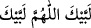

göremeyince içinden bir kaygı duydu ve kendini bir titreme aldı. Sonra üçüncü defa:
“Ey Mûsâ b. İmrân, ben Allah’ım, benden başka ilâh yoktur” diye nidâ olundu. Bunun
üzerine Mûsâ (a.s.) “Lebbeyk (Buyur Ya Rabbi!)” dedi ve Allah için secdeye kapandı.
Allah Teâlâ buyurdu ki: “Başını kaldır, ey Mûsâ b. İmrân!” Mûsâ (a.s.) başını kaldırdı,
Allah Teâlâ şöyle buyurdu:
“Ey Mûsâ, hiç bir gölgenin olmadığı günde, arşın gölgesinde oturmak istersen, yetime
merhâmetli bir baba gibi davran; dul kadınlara da şefkatli bir koca gibi ol! Ey Mûsâ,
merhametli ol ki, sana da merhâmet olunsun. Ey Mûsâ, nasıl davranırsan öyle karşılık
görürsün. Ey Mûsâ, kim bana Muhammed’i inkâr ederek kavuşursa, onu cehenneme
atarım. Bu kimse, dostum İbrâhim, kendisine hitaben konuştuğum Mûsâ olsa da..” Bunun
üzerine Mûsâ (a.s.) dedi ki: “Yâ Rabbi, Muhammed kimdir?” Allah Teâlâ buyurdu:
“Ey Mûsâ, izzet ve celâlime yemin olsun ki, kendim için ondan daha mükerrem bir
mahlûk yaratmadım. Gökleri, yeri, güneşi ve ayı yaratmadan iki bin yıl önce arşın
altında onun ismini kendi ismimle beraber yazdım. İzzet ve celâlime yemin olsun ki;
cennet, Muhammed ve ümmeti girinceye kadar, insanlara haram kılınmıştır.” Mûsâ
(a.s.): “Muhammed ümmeti kimdir?” dedi. Allah Teâlâ şöyle buyurdu: “Onun ümmeti,
yükseliş hâlinde de iniş hâlinde de çok hamdedenlerdir. Her hâlde orta yolu tutarlar,
bedenlerini temizlerler; gündüzleri oruç tutarlar, geceleri namaz kılarlar. Onlardan az
şeyi kabul ederim. Lâ ilâhe illâh (Allah’dan başka ilâh yoktur) deyip şehâdette
bulunmaları sebebiyle onları cennete sokarım.” Mûsâ (a.s.) dedi ki: “Yâ Rabbi, beni bu
ümmetin peygamberi yap.” Allah Teâlâ buyurdu ki: “O ümmetin peygamberi
kendilerindendir.” Mûsâ (a.s.) dedi ki: “Ya Rabbi, beni bu peygamberin ümmetinden
kıl.” Allah Teâlâ buyurdu ki: “Sen önce geldin. Onlar senden sonra gelecekler, ey Mûsâ!
Ancak celâl evimde seninle onları buluşturacağım, toplayıp bir araya getireceğim.”[113]
Rivâyete göre Vehb b. Münebbih şöyle demiştir: Allah Teâlâ, Mûsâ (a.s.)’ı
sırdaşlığa yakınlaştırınca, Mûsâ (a.s.) dedi ki: “Ya Rabbi! Tevratta bir ümmet
buluyorum; onlar, insanlar için çıkarılan en hayırlı ümmettir; iyiliği emrederler,
kötülükten sakındırırlar. Onları benim ümmetimden kıl.” Allah Teâlâ buyurdu ki: “Bu,
Ahmed’in ümmetidir.” Mûsâ (a.s.) dedi ki: “Ya Rabbi, ben Tevrat’ta görüyorum ki;
onlar sadakalarını yerler, -ki sadakayı yemek bu ümmete has bir durumdur- sen de
onların bu fiilini kabul edersin. Onların duâları müstecâbtır. Onları benim ümmetimden
kıl.” Allah Teâlâ buyurdu ki: “Bu, Ahmed’in ümmetidir.” Mûsâ (a.s.), bu ümmetle
karşılaşmayı arzulayınca, Allah Teâlâ dedi ki: “Onların zuhûru (yeryüzüne çıkışları)
bugün değildir. İstersen onların kelâmını sana dinletirim.” Mûsâ (a.s.): “Evet, Ya
Rabbi!” deyince, Allah Teâlâ: “Ey ümmet-i Muhammed” diye seslendi. Onlar da
babalarının sulblerinden “
(buyur ya Rabbi)” diyerek icâbet ettiler.”
Musâ onların sözünü işitti; ardından Allah Teâlâ onları yâni ümmet-i Muhammed’in
ruhlarını hediyesiz geri göndermek istemedi ve şöyle seslendi: “Siz, bana duâ etmeden
önce ben size icâbet ettim; benden istemeden önce sizi affettim. Benden merhamet